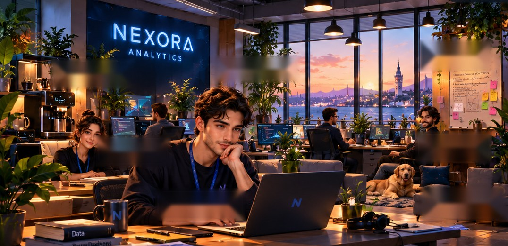

08:47 · FIRST DAY
Welcome to Nexora.
Start as an intern. Learn by solving real data problems.
M
Maya
Günaydın. İlk vaka masanda. Satışlarda bir şey ters görünüyor.
Günaydın. İlk vaka masanda. Satışlarda bir şey ters görünüyor.
CASE 001 · THE SALES MYSTERY
Satışlar nerede kırıldı?
YOUR ANALYSIS
Hangi bölgeyi araştırırsın?
İstanbul
Ankara
İzmir · -31%
Bursa
İlk kararın bir dashboard'dan değil, doğru sorudan başlar.
CASE 008 · SQL + GRAIN
İki tablo. Tek cevap.
Önce grain'i anla, sonra JOIN yap.
analysis.sql
Beklenen sonuç
regionordersrevenue
İzmir1,842₺269K
İstanbul4,991₺806K
SKILL EVIDENCE
JOIN · Grain Awareness◐ Developing → Practice
CASE 012 · EXPERIMENTATION
Pazarlamanın sevdiği deney
CONTROL · n=12,000
8.4%
8.4%
Conversion
VARIANT · n=12,110
9.1%
9.1%
Conversion
Karar vermeden önce
✓ Primary metric: Conversion
✓ Randomization unit: User
Guardrail: Unsubscribe rate
Fark var. Peki belirsizlik ne kadar?
CASE 015 · COHORT ANALYSIS
Müşteri neden kayboluyor?
PYTHON
cohort_analysis.py
cohort = df.pivot_table(
index="signup_month",
columns="month_n",
values="customer_id",
aggfunc="nunique"
)
Isı haritasında kırılma noktasını bul.
CASE 029 · MODEL EVALUATION
Precision mı Recall mı?
TP
612
612
FP
388
388
FN
291
291
TN
8,709
8,709
Decision threshold
0.50
Retention ekibinin kapasitesi: 1,000 müşteri/hafta.
Business cost: FN > FP
CASE 037 · EXPLAINABILITY
Model neden böyle karar verdi?
Top drivers
↓ Son 30 gün aktivite
↑ Destek talebi
↓ Sipariş sıklığı
SHAP explanation
Modelin tahminine hangi feature'ların katkı verdiğini açıklar.
✓ Explanation
Critical distinction
SHAP ≠ causality
Açıklama, neden-sonuç kanıtı değildir.
02:13 · PRODUCTION INCIDENT
Model bozuldu.
PSI
0.41
0.41
DRIFT
AUC
0.71
0.71
↓ 0.12
LATENCY
1.8s
1.8s
+240%
ROI
-8%
-8%
7d
Incident action
1. Freeze new rollout
2. Roll back stable version
3. Diagnose drift + serving path
LEAD DATA SCIENTIST
Buse'nin model review'u
B
Buse Yılmaz
Model validation'da 0.92 AUC veriyor. PR açtım, bakabilir misin?
Model validation'da 0.92 AUC veriyor. PR açtım, bakabilir misin?
pull_request_184.py
scaler = StandardScaler()
X = scaler.fit_transform(full_dataset)
X_train, X_test = temporal_split(X)
model.fit(X_train, y_train)
Review: preprocessing validation'dan önce fit edilmiş.
HEAD OF DATA · BOARD MEETING
€2M'yi nereye yatırırsın?
Data Foundation
€800K
Quality · lineage · platform
AI Products
€700K
Measured use cases
People & Governance
€500K
Capability · risk · ownership
3-year strategy
Foundation → measurable AI bets → scale what proves value